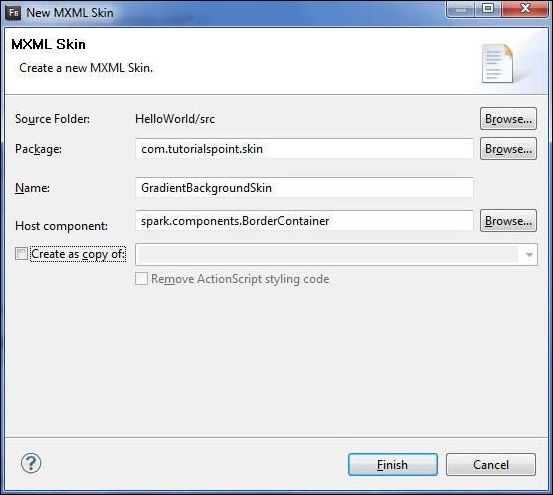
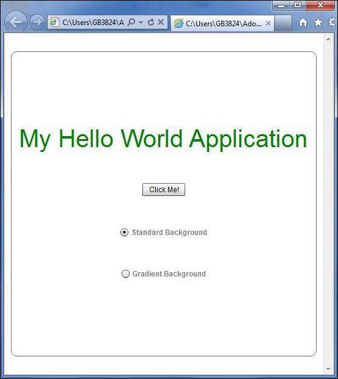
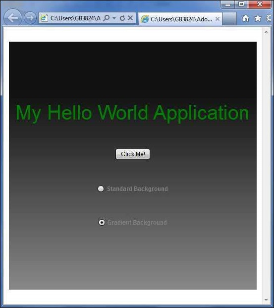

Flex - Style with Skin¶
What is Skinning?¶
Skinning in Flex, is a process of customizing look and feel of a UI Component completely.
A Skin can define text, image, filters, transitions and states of a component.
A Skin can be created as a separate mxml or ActionScript component.
Using skin, we can control all visual aspects of a UI component.
The process of defining skin is same for all the UI component.
Step 1 – Create a Skin¶
Launch Create MXML Skin wizard using the option File > New > MXML Skin.
Enter Package as com.tutorialspoint.skin, name as GradientBackgroundSkin and choose host component as existing flex BorderContainer controlspark.component.BorderContainer.
Now you’ve created a skin for a BorderContainer. Modify content of the mxml skin file src/com.tutorialspoint/skin/GradientBackgroundSkin.mxml.
Update fill layer as follows −
<!-- fill -->
<s:Rect id = "backgroundRect" left = "0" right = "0" height = "100%" top = "0">
<s:fill>
<s:LinearGradient rotation = "90">
<s:GradientEntry color = "0x888888" ratio = "0.2" />
<s:GradientEntry color = "0x111111" ratio = "1" />
</s:LinearGradient>
</s:fill>
</s:Rect>
Step 2: Apply Skin¶
You can apply skin over a component in two ways −
Apply skin in MXML script (statically)¶
Apply GradientBackgroundSkin to a BorderContainer with id mainContainer using its skinClass attribute.
<s:BorderContainer width = "560" height = "500" id = "mainContainer"
styleName = "container">
<s:VGroup width = "100%" height = "100%" gap = "50"
horizontalAlign = "center" verticalAlign = "middle"
skinClass = "com.tutorialspoint.skin.GradientBackgroundSkin">
Apply skin in ActionScript (dynamically)¶
Apply GradientBackgroundSkin to a BorderContainer with id mainContainer using its skinClass property.
protected function gradientBackground_clickHandler(event:MouseEvent):void {
mainContainer.setStyle("skinClass", GradientBackgroundSkin);
}
Flex Style with Skin Example¶
Let us follow the following steps to see skinning in action in a Flex application by creating a test application −
Create a project with a name HelloWorld under a packagecom.tutorialspoint.client as explained in the Flex - Create Application chapter.
Create skin GradientBackgroundSkin.mxml under a packagecom.tutorialspoint.skin as explained above. Keep rest of the files unchanged.
Modify HelloWorld.mxml as explained below. Keep rest of the files unchanged.
Compile and run the application to make sure business logic is working as per the requirements.
Following is the content of the GradientBackgroundSkin.mxml file src/com/tutorialspoint/skin/GradientBackg roundSkin.mxml.
<?xml version = "1.0" encoding = "utf-8"?>
<s:Skin xmlns:fx = "http://ns.adobe.com/mxml/2009"
xmlns:s = "library://ns.adobe.com/flex/spark"
xmlns:mx = "library://ns.adobe.com/flex/mx">
<!-- host component -->
<fx:Metadata>
[HostComponent("spark.components.BorderContainer")]
</fx:Metadata>
<!-- states -->
<s:states>
<s:State name = "disabled" />
<s:State name = "disabled" />
<s:State name = "normal" />
</s:states>
<!-- SkinParts
name = contentGroup, type = spark.components.Group, required = false
-->
<!-- fill -->
<s:Rect id = "backgroundRect" left = "0" right = "0" height = "100%" top = "0">
<s:fill>
<s:LinearGradient rotation = "90">
<s:GradientEntry color = "0x111111" ratio = "0.2" />
<s:GradientEntry color = "0x888888" ratio = "1" />
</s:LinearGradient>
</s:fill>
</s:Rect>
<!-- must specify this for the host component -->
<s:Group id = "contentGroup" left = "0" right = "0" top = "0" bottom = "0" />
</s:Skin>
Following is the content of the modified HelloWorld.mxml filesrc/com/tutorialspoint/client/HelloWorld.mxml.
<?xml version = "1.0" encoding = "utf-8"?>
<s:Application xmlns:fx = "http://ns.adobe.com/mxml/2009"
xmlns:s = "library://ns.adobe.com/flex/spark"
xmlns:mx = "library://ns.adobe.com/flex/mx"
width = "100%" height = "100%" minWidth = "500" minHeight = "500"
initialize = "application_initializeHandler(event)">
<fx:Style source = "/com/tutorialspoint/client/Style.css" />
<fx:Script>
<![CDATA[
import com.tutorialspoint.skin.GradientBackgroundSkin;
import mx.controls.Alert;
import mx.events.FlexEvent;
import spark.skins.spark.BorderContainerSkin;
protected function btnClickMe_clickHandler(event:MouseEvent):void {
Alert.show("Hello World!");
}
protected function application_initializeHandler(event:FlexEvent):void {
lblHeader.text = "My Hello World Application";
}
protected function gradientBackground_clickHandler(event:MouseEvent):void {
mainContainer.setStyle("skinClass", GradientBackgroundSkin );
}
protected function standardBackground_clickHandler(event:MouseEvent):void {
mainContainer.setStyle("skinClass", BorderContainerSkin );
}
]]>
</fx:Script>
<fx:Declarations>
<s:RadioButtonGroup id = "selectorGroup" />
</fx:Declarations>
<s:BorderContainer width = "500" height = "500" id = "mainContainer"
skinClass = "spark.skins.spark.BorderContainerSkin"
horizontalCenter = "0" verticalCenter = "0" cornerRadius = "10">
<s:VGroup width = "100%" height = "100%" gap = "50" horizontalAlign = "center"
verticalAlign = "middle">
<s:Label id = "lblHeader" fontSize = "40" color = "green"
styleName = "heading" />
<s:Button label = "Click Me!" id = "btnClickMe"
click = "btnClickMe_clickHandler(event)" />
<s:RadioButton color = "gray" fontWeight = "bold"
group = "{selectorGroup}" label = "Standard Background"
click = "standardBackground_clickHandler(event)" selected = "true" />
<s:RadioButton color = "gray" fontWeight = "bold"
group = "{selectorGroup}" label = "Gradient Background"
click = "gradientBackground_clickHandler(event)" />
</s:VGroup>
</s:BorderContainer>
</s:Application>
Once you are ready with all the changes done, let us compile and run the application in normal mode as we did in Flex - Create Application chapter. If everything is fine with your application, it will produce the following result: [ Try it online ]
 